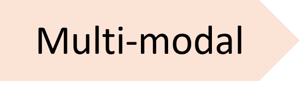
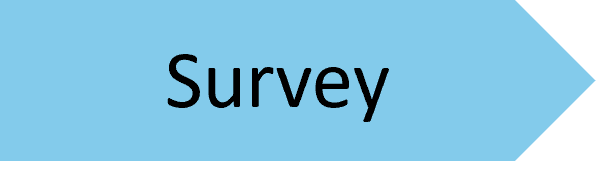
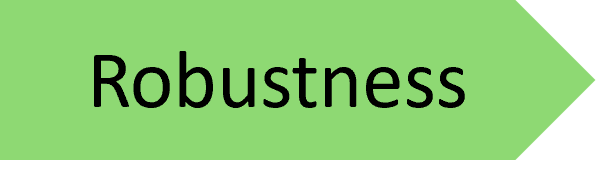
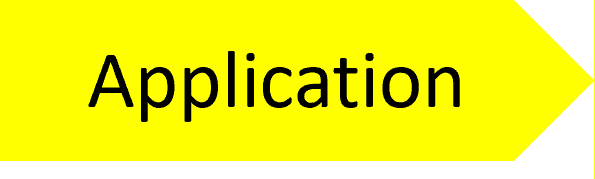
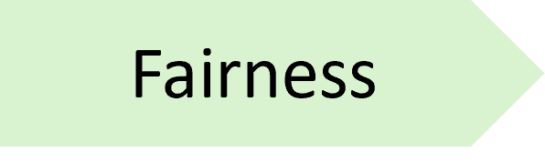
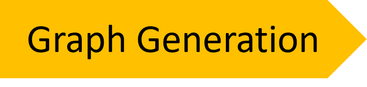
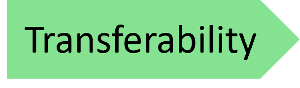
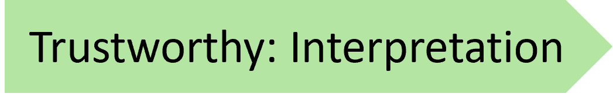
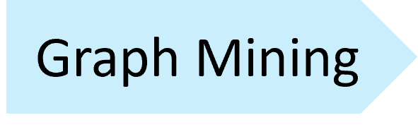

|
My name is Lecheng Zheng (郑乐成). I am currently a Ph.D. student at the Department of Computer Science, University of Illinois at Urbana–Champaign . I work as a research assistant at iSAIL Lab under the supervision of Prof. Jingrui He . Before that, I got my Bachelor's degree in Computer Science from the University of Kansas advised by Prof. Jun(Luke) Huan . My research primarily centers on enhancing the trustworthiness and efficiency of machine learning algorithms across various modalities and disciplines, with the ultimate goal of making ML models more accessible and inclusive. My research interests covers a wide range of topics:
CV / Email / Google Scholar / Github / Linkedin |

|
|

|
|
|
Conference |
-
Heterogeneous Contrastive Learning for Foundation Models and Beyond
Lecheng Zheng, Baoyu Jing, Zihao Li, Hanghang Tong, Jingrui He
KDD 2024 Code
  -
MULAN: Multi-modal Causal Structure Learning and Root Cause Analysis for Microservice Systems
Lecheng Zheng, Zhengzhang Chen, Jingrui He, Haifeng Chen
Web Conference 2024 (Oral Presentation) Code
  -
FairGen: Towards Fair Graph Generation
Lecheng Zheng, Dawei Zhou, Hanghang Tong, Jiejun Xu, Yada Zhu, Jingrui He
ICDE 2024 Code
  - Fairness-aware multi-view clustering
Lecheng Zheng, Yada Zhu, Jingrui He
SDM 2023 Code
- MentorGNN: Deriving Curriculum for Pre-Training GNNs
Dawei Zhou*, Lecheng Zheng*, Dongqi Fu, Jiawei Han, Jingrui He
CIKM 2022 Code
 - Contrastive learning with complex heterogeneity
Lecheng Zheng*, Jinjun Xiong, Yada Zhu, Jingrui He
KDD 2022 Code
- Outlier impact characterization for time series data
Jianbo Li, Lecheng Zheng, Yada Zhu, Jingrui He
AAAI 2022. Code
 - Deep co-attention network for multi-view subspace learning
Lecheng Zheng, Yu Cheng, Hongxia Yang, Nan Cao, Jingrui He
Web Conference 2021 Code
- A data-driven graph generative model for temporal interaction networks
Dawei Zhou, Lecheng Zheng, Jiawei Han, Jingrui He
KDD 2020 Code
- Deep multimodality model for multi-task multi-view learning
Lecheng Zheng, Yu Cheng, Jingrui He
Web Conference 2020. Code
-
Misc-GAN: A multi-scale generative model for graphs
Lecheng Zheng*, Dongqi Fu*, Ross Maciejewski, Jingrui He
TMLR 2024
-
Misc-GAN: A multi-scale generative model for graphs
Dawei Zhou*, Lecheng Zheng*, Jiejun Xu, Jingrui He
Frontiers in big Data. 2019
-
Fair Anomaly Detection For Imbalanced Groups
Ziwei Wu*, Lecheng Zheng*, Yuancheng Yu, Ruizhong Qiu, John Birge, Jingrui He
preprint 2024. Code
-
Towards Multi-view Graph Anomaly Detection with Similarity-Guided Contrastive Clustering
Lecheng Zheng, John R Birge, Yifang Zhang, Jingrui He
preprint 2023. Code
 -
LEMMA-RCA: A Large Multi-modal Multi-domain Dataset for Root Cause Analysis
Lecheng Zheng*, Zhengzhang Chen*, Dongjie Wang*, Chengyuan Deng*, Reon Matsuoka, Haifeng Chen
preprint 2023. Code
|
Program Committee Members Lecheng Zheng, Baoyu Jing, Zihao Li, Hanghang Tong, Jingrui He KDD 2024. Slides Lecheng Zheng, Jingrui He SDM 2023. Slides Dawei Zhou, Lecheng Zheng, Jingrui He IJCAI 2020. Slides |
|
Program Committee Members
|